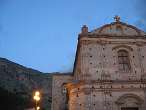
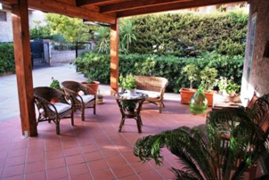
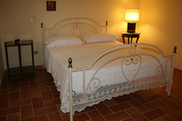
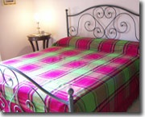
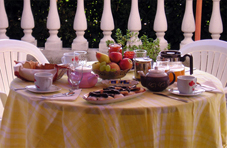
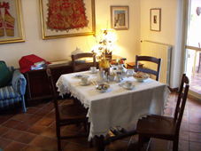
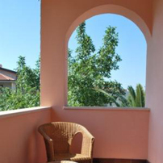
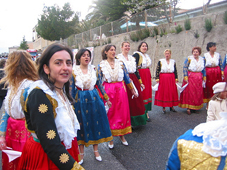
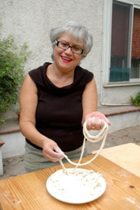

{% extends "base.html" %}
{% block title %}
{% endblock %}
{% block nav %}
PieffePieffe
{% endblock %}
{% block body %}

Dove siamo?
A
Frascineto (CS), in Calabria.
Un suggestivo paese
Arbëreshe (Italo-Albanese) che sorge in una posizione vantaggiosa per visitare il Parco Nazionale del Pollino, partendo dal versante calabrese jonico.
A Frascineto si conservano ancora la lingua, le tradizioni religiose, orali e musicali portate dai coloni provenienti dall'Albania nel XV secolo.

Mikëpritja
Lucia, Salvatore e i loro figli Mimmo e Pierfrancesco saranno lieti di accogliervi nella loro villa come graditi ospiti, nel nome della “mikëpritja”: la tradizionale accoglienza Arbëreshe.

Le Camere
Abbiamo a vostra disposizione 4 Camere
Dolcedorme
Manfriana
Il Vascello
La Fagosa
Per totale di 10 posti, ognuna dotata di bagno e terrazzo

Le eleganti camere, arredate con mobili d'epoca e moderni, sono impreziosite dalle antiche coperte arbëreshe. Per immergersi in un ambiente caldo, familiare e di sapore antico.
Sui letti ci sono le coperte prodotte al telaio dalle donne di un tempo, nei colori tipici dell'Arberia.
Le lenzuola e gli asciugamani di puro cotone o di lino sono decorati con pizzi e merletti.
La Pulizia approfondita e cambio biancheria viene effettuata ogni 3 giorni (salvo particolare richiesta del cliente)

Colazione
I nostri ospiti saranno svegliati dal buon profumo delle nostre marmellate, i dolcetti tipici (crocette, cioccolatini di fichi, il dolce del ”Pollino”, dolci alle mandorle, bocconotti, “kruskulit”, “scalletat”), la frutta di stagione e, non meno importante, la nostra disponibilità a raccontarci, farci conoscere ed apprezzarci.

La colazione viene servita in una accogliente salone oppure nella veranda che si affaccia sul giardino, in cui si possono gustare i dolcetti tipici fatti in casa, frutta di stagione, marmellate e altre specialità locali.

Terrazzi
Le camere sono tutte dotate di televisore, climatizzatore, collegamento internet wi-fi, e permettono, grazie ai terrazzini con sdraio, di ammirare le bellezze paesaggistiche e ambientali.

I servizi
Angolo lettura: Testi classici e di narrativa Accompagnamento turistico con le Guide Ufficiali del Parco del Pollino
Collaborazione con il Centro benessere DiBi
Corsi di Cucina
Corsi di Italiano L2
Informazioni su: percorsi naturalistici, culturali ed eventi vari caratterizzanti il territorio
Posto macchina

La Cena
Ai nostri ospiti (coppie) che si fermano per un periodo superiore a tre notti offriamo una cena costituito da piatti tipici quali:
SHTRIDHLA MЁ ÇЁRRIN
RRASHKATJEL ME HEKURTHIN
RRISÇIOLINRAT
GAVACRA
TUMAC ME DRUGEN
{% endblock %}
{% block right %}
Informazioni e prenotazioni
Tel. 0981 32142
Cell. 347 9156521
Tariffe BB&B Pieffe
Adulti
€ 25-30 al giorno
Bambini
3-10 anni
sconto 30%Bambini fini a 3 anni
GRATISPagamento anche con carta di credito
VISA
MASTERCARD
AURA
PAYPAL
{% load call %}
Escursioni e Visite Guidate
Per chi ama la montagna o vuole visitare il Parco in generale, presso la reception, disporrà di documentazione e materiali informativi.
Chi vuole percorrere l’ampia rete di sentieri del Pollino potrà usufruire dei servizi di una
Guida Ufficiale del Parco
{% call "prenota_visita.html" %}
{% endblock %}